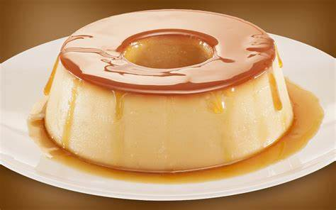

Pudim de Leite Condensado
Pudim de Leite Condensado
Tempo de preparo: 40 min

Ingredientes
1 lata de leite condensado
4 ovos
1 xícara de leite
*Calda*
1 xícara (chá) de acúcar
1/3 xícara (chá) de água
Modo de preparo
*Calda*
1. Em uma panela, misture a água e o açucar até formar uma calda.
2. Unte uma forma com a calda e reserve.
*Massa*
3. Bata todos os ingredientes no liquidificador e despeje na forma caramelizada.
4. Leve para assar em banho-maria por 40 minutos.
5. Desenforme e sirva.
Fonte:
Tudo Gostoso